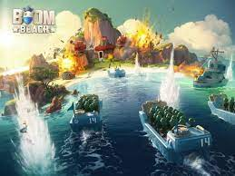

Boom Beach es un videojuego de estrategia móvil para los sistemas iOS y Android, desarrollado por Supercell se creo el 26 de marzo de 2014/p> 
Es un juego de estrategia multijugador que es similar al clach of clans defender tu base, y atarcaer otars bases con distintas tropas , conseguir recursos para mejorar tu base y desbloquear sus defensas y edificios
supercell brawl stars galeria royale clash of clans hay day clash royale